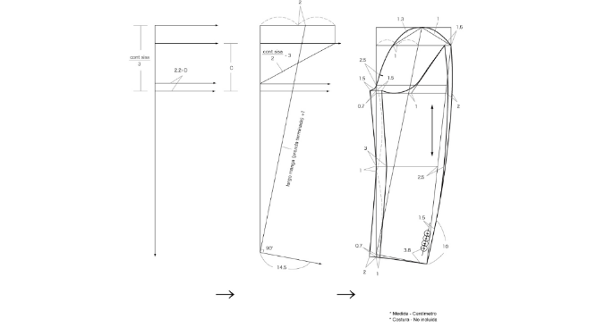
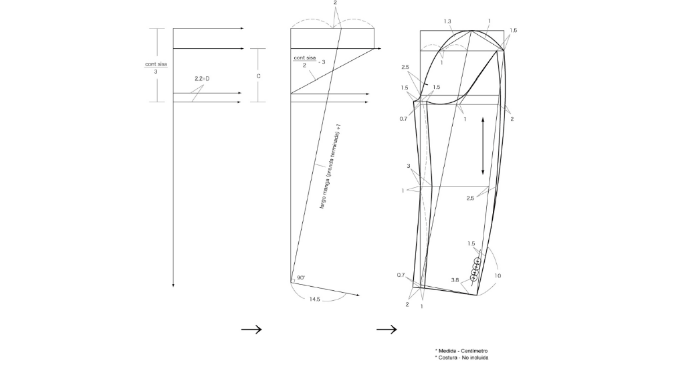
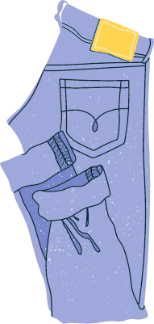
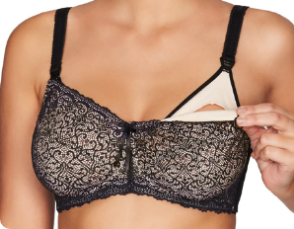
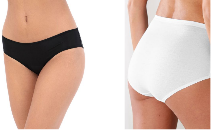
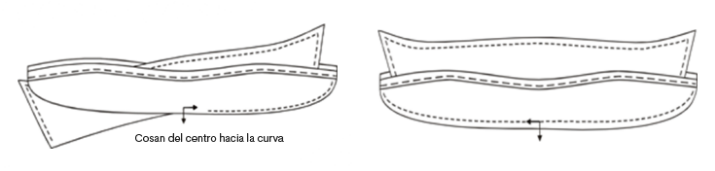
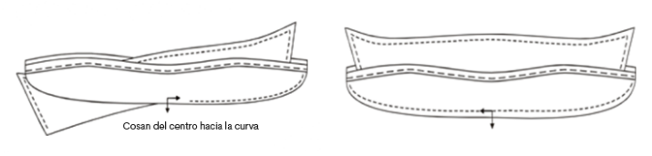

Introducción
11. Patronaje Interpretación de Modelos

En la industria se identifican diferentes niveles de complejidad en la producción y el desarrollo de prendas de vestir, cada vez más se hace notoria la exploración y el dinamismo en las prendas, la arquitectura sobre la estructura del cuerpo ha tomado cada vez más fuerza, permitiendo desarrollar prendas con ajustes o ilusiones ópticas qué fortalecen el desarrollo del diseño, hoy por hoy no basta con hacer patrones base, sino que es necesario experimentar, explorar y generar siluetas desde cualquier línea de producción.
El éxito de un patronista en el desarrollo de moldes corresponde únicamente a la comprensión del cuerpo, desde su funcionamiento hasta de qué manera vestirlo o cubrirlo, para esto es necesario partir desde el conocimiento técnico funcional y no comercial.
El fortalecimiento técnico de un patronista se da en la práctica para ello se han desarrollado una serie de explicaciones teórico-prácticas que permiten experimentar y explorar en el desarrollo de siluetas, volúmenes aplicados en las prendas.
11.1 Manga sastre
Para hacer el desarrollo de una manga sastre, se debe tener en cuenta la posición anatómica del brazo y cuál es el objetivo principal de la manga.

Cuando se habla de prendas sastre, son todas aquellas que permiten o fortalecen una buena postura sobre el cuerpo, en este caso la manga sastre lleva la inclinación anatómica del brazo, es decir desde el plano se genera una serie de pinzas que permiten tener en la prenda o en la manga la forma anatómica del cuerpo.

En el manual de patronaje básico SENA, se identifica varias formas o explicaciones metodológicas para trazar una manga sastre, es importante tener en cuenta que cualquiera de los pasos o métodos aplicados llevan al mismo punto en este caso una manga sastre - funcional.


El objetivo principal de esta introducción es identificar qué sin importar el tipo de trazo, explicación o metodología, la funcionalidad y el objetivo principal de la pieza, en este caso la manga sastre debe ser el mismo. Cubrir el brazo dando la forma anatómica del cuerpo.
11.2 Trazo de chaqueta sastre masculina
Cuando se habla de prendas sastre o más específicamente chaqueta sastre masculina, se debe tener en cuenta que el enfoque principal va hacia el ajuste y horma, en masculino el volumen o el ajuste de pinzas se trabaja hacia la parte posterior teniendo en cuenta que el ancho de espalda es uno de los puntos más protuberantes en la parte superior de la silueta masculina.
En el manual de patronaje básico SENA, se identifica como punto de partida en la página 71, el trazo base para chaqueta sastre masculina, el cual consiste en un básico con ciertas modificaciones o traslados de los puntos base del cuerpo, para obtener una mejor forma y ajuste sobre la estructura o silueta característica de las prendas sastre.
Para el trazo de una chaqueta sastre en la página 73 y en la página 76 del manual de patronaje básico SENA, se identifica una serie de sugerencias o especificaciones frente a las modificaciones en plano que se pueden trabajar para el desarrollo de una chaqueta sastre, se debe tener en cuenta que en masculino no solamente se trabaja por silueta sino por ocasión de uso, es decir que cada prenda o cada diseño tiene unas especificaciones diferentes, a nivel general se puede categorizar la finalidad de la prenda por la cantidad de botones, el ancho de la solapa, la forma en la división del cuello y solapa, el ancho de una tapa de bolsillo, la forma de una boca de bolsillo, los ribetes, el canto o la forma del largo, el forro, los acabados en las partes internas de la prenda, incluso hasta la cantidad de aberturas o cajas, corresponden o suplen necesidades diferentes. Por esto se recomienda desde patronaje, siempre trabajar la parte funcional de la prenda, dejando de lado la segmentación o el nombre comercial.
 

Para iniciar el trazo de prendas, desde los básicos, siempre se deben alinear o aplomar sobre una línea base de construcción, en prendas inferiores la línea de aplome o línea base será la línea de altura de cadera.
Recuerde que, con el fin de poder adquirir cada vez más fortaleza en patronaje, lo ideal es poder cortar, pegar, trasladar y experimentar.
Se debe tener en cuenta que las medidas implementadas o referenciadas en los videos, son solo ejemplos y guías, cada plano o cada uno tendrá referencias diferentes, esto depende del tipo de trazo, elementos o incluso el tipo de lápiz que se trabaje, lo importante es siempre referenciar las medidas del cuadro de tallas y las fórmulas referenciadas.
11.3 Interpretación de chaqueta bomber
En el desarrollo de productos para la línea masculina, se identifican diferentes tipos de variaciones, dependiendo el costo de producción o línea de venta, en esta ocasión se va hacer el desarrollo de una chaqueta bomber, si bien la chaqueta bomber es una prenda informal o que puede ser categorizada dentro de un rango de prendas casuales, en esta ocasión se va a ser el desarrollo partiendo desde la base sastre masculina, a la hora de patronar o desarrollar un producto, se debe tener en cuenta siempre el requerimiento de la empresa o cliente, si lo que se busca es un estándar de calidad mayor o un costo de producción más elevado, lo ideal es asegurar la horma y el ajuste desde patronaje, por eso en esta ocasión se trabajará el desarrollo de la chaqueta partiendo desde una base sastre y no desde una base normal.
Con el fin de tener referencias visuales y profundizar cada vez más en la interpretación de prendas, se irá asignando una serie de imágenes para hacer el desarrollo del patrón y el análisis de proporciones bajo requerimiento real de un cliente.
Las proporciones son medidas que se obtienen de una imagen, muestra física, ficha técnica, dibujo plano o diseño, que al hacer un paralelo con los básicos o moldes bases de la línea, silueta o talla que se esté trabajando, permite obtener medidas o dimensiones de referencia para el desarrollo o trazo del molde correspondiente al diseño, si bien en ocasiones anteriores se han desarrollado ejercicios sobre análisis de proporciones, es importante resaltar que las medidas y el análisis de proporciones varía de acuerdo al tamaño, diseño, impresión, dibujo, básico y sistema de medida, las referencias implementadas son solo ejemplos detallados de cómo y qué manera se debe implementar el desarrollo.
La finalidad del ejercicio es poder aplicar todo el conocimiento y manejo de conceptos adquirido hasta el momento, llevando la implementación de los básicos hacia diferentes tipos de prendas.

Cuando se empieza a trabajar el trazo de prendas, desde los básicos, los básicos siempre deben ir alineados o aplomados sobre una línea base de construcción, en prendas superior la línea de aplome o línea base será la línea de profundidad de sisa.
Se debe tener en cuenta que las medidas implementadas o referenciadas en los videos, son solo ejemplos y guías, cada plano o cada uno tendrá referencias diferentes, esto depende del tipo de trazo, elementos o incluso el tipo de lápiz que se trabaje, lo importante es siempre referenciar las medidas del cuadro de tallas y las fórmulas según los requerimientos.
11.4 Chaqueta sastre femenina
En el desarrollo de prendas femeninas se identifica gran variedad de productos, a nivel comercial existen diversos nombres para referirse a las prendas, desde un punto funcional las características principales de una prenda sastre femenina, corresponde al aplome, forma y ajuste sobre el cuerpo, sin embargo, existen diversos tipos de prendas, con gran variedad de largos, variación en cuellos, escotes, bolsillos, mangas, que reciben el nombre o se categorizan como prendas sastre.
En esta ocasión se va a hacer el análisis de una chaqueta sastre clásica femenina sobre una imagen, no quiere decir que este diseño o tipo de prenda sea el único que existe o el que oficialmente se trabaja como sastrería, se tomara únicamente un referente visual para contextualizar y hacer el desarrollo de patronaje con las características mínimas que debe tener una prenda sastre superior.
Para el desarrollo de sastrería femenina a diferencia de la sastrería masculina, no se tiene una base o un básico específico, se trabaja sobre el mismo básico superior industrial desarrollado en ocasiones anteriores.
Con el fin de tener referencias visuales y profundizar cada vez más en la interpretación de prendas, se irá asignando una serie de imágenes para hacer el desarrollo del patrón y el análisis de proporciones bajo requerimiento real de un cliente.
Las proporciones son medidas que se obtienen de una imagen, muestra física, ficha técnica, dibujo plano o diseño, que al hacer un paralelo con los básicos o moldes bases de la línea, silueta o talla que se esté trabajando, permite obtener medidas o dimensiones de referencia para el desarrollo o trazo del molde correspondiente al diseño, si bien en ocasiones anteriores se han desarrollado ejercicios sobre análisis de proporciones, es importante resaltar que las medidas y el análisis de proporciones varía de acuerdo al tamaño, diseño, impresión, dibujo, básico y sistema de medida, las referencias implementadas son solo ejemplos detallados de cómo y qué manera se debe implementar el desarrollo.
La finalidad del ejercicio es poder aplicar todo el conocimiento y manejo de conceptos adquirido hasta el momento, llevando la implementación de los básicos hacia diferentes tipos de prendas y líneas de producto.
Cuando se empieza a trabajar el trazo de prendas, desde los básicos, los básicos siempre deben ir alineados o aplomados sobre una línea base de construcción, en prendas superiores la línea de aplome o línea base será la línea de profundidad de sisa.
Se debe tener en cuenta que las medidas implementadas o referenciadas en los videos, son solo ejemplos y guías, cada plano o cada uno tendrá referencias diferentes, esto depende del tipo de trazo, elementos o incluso el tipo de lápiz que se trabaje, lo importante es siempre referenciar las medidas del cuadro de tallas y las fórmulas referenciadas.
Trazo manga chaqueta sastre femenina
Para el trazo de una manga sastre, se deben tener en cuenta las características de forma, no solamente de la manga sino del comportamiento o diseño, en este caso que se está trabajando sobre una imagen en la cual se identifican características específicas cómo cortes, caja y botonadura, es importante mencionar que no solamente se trabajan estas piezas externas, sino que para hacer el desarrollo desde patronaje y pasar al proceso de confección o ensamble se desarrollan piezas internas cómo borra flojos, refuerzos, entretelas, falsos y forros.
En este punto se tiene claras las generalidades para el desarrollo o trazo de una manga sastre, sin embargo, hace falta fortalecer las piezas internas para la elaboración o el desarrollo de esta.
Una de las piezas más características dentro de la manga sastre es el borra flojo, como su nombre lo indica es una pieza interna que en el proceso de confección facilita o permite borrar el flojo que se genera entre el recorrido de la cabeza de manga y la sisa de la prenda, esta pieza se traza de diferentes maneras, en este caso se muestran o se explican las dos más comunes a nivel general.

Para el trazo o desarrollo de la manga, recuerde tener en cuenta el análisis de proporciones y el trazo de la interpretación de chaqueta sastre femenina.
Se debe tener en cuenta que las medidas implementadas o referenciadas en los videos, son solo ejemplos y guías, cada plano o cada uno tendrá referencias diferentes, esto depende del tipo de trazo, elementos o incluso el tipo de lápiz que se trabaje, lo importante es siempre referenciar las medidas del cuadro de tallas y las fórmulas referenciadas.
Despiece chaqueta sastre femenina
Al momento de despiezar una chaqueta sastre se deben tener en cuenta diferentes tipos de características cómo, qué tipo de acabado va a tener internamente debido a que en algunos países por la temporada o la estación se le asignan diferentes tipos de acabados internos, los cuales van de la mano con el desarrollo de patronaje.
En este caso se va a hacer el despiece de una chaqueta sastre completamente forrada, es importante aclarar que existen diferentes formas de hacer los acabados internos o refuerzos que va a llevar la chaqueta, cada empresa o cada maquila tiene una forma diferente de producción y acabados, todo se debe hacer siempre bajo el requerimiento de la empresa teniendo en cuenta la mano de obra y maquinaria con la que se cuenta.
Para el desarrollo de los moldes de refuerzos, entretelas y forros al igual que en las mangas son elementos que no se identifican en la parte externa de la prenda, es decir no se ven a través de una imagen, dibujo plano, incluso muestra físicas, sin embargo, son piezas que sí o sí complementan el desarrollo de la prenda. En este caso se explica las generalidades industriales para el desarrollo de la prenda, sin embargo, encontrará diferentes tipos de necesidades o requerimientos en la industria.


Para el trazo o desarrollo del despiece de la chaqueta sastre, recuerde tener en cuenta el trazo de la interpretación de chaqueta y manga sastre femenina.
Se debe tener en cuenta que las medidas implementadas o referenciadas en los videos, son solo ejemplos y guías, cada plano o cada uno tendrá referencias diferentes, esto depende del tipo de trazo, elementos o incluso el tipo de lápiz que se trabaje, lo importante es siempre referenciar las medidas del cuadro de tallas y las fórmulas referenciadas.
11.5 Chaqueta cuello alto (traslados de pinza)
El desarrollo de prendas la exploración y experimentación en el traslado de pinzas generación de cortes y eliminación de líneas o puntos claves de eje de rotación del cuerpo, permite tener una visión más amplia sobre el desarrollo y la elaboración de prenda, este tipo de ejercicios fortalecen el conocimiento de un patronista aumentando su nivel de comprensión y desarrollo en la dificultad de las prendas.
Con el fin de tener referencias visuales y profundizar cada vez más en la interpretación de prendas, se irá asignando una serie de imágenes para hacer el desarrollo del patrón y el análisis de proporciones bajo requerimiento real de un cliente.
Las proporciones son medidas que se obtienen de una imagen, muestra física, ficha técnica, dibujo plano o diseño, que al hacer un paralelo con los básicos o moldes bases de la línea, silueta o talla que se esté trabajando, permite obtener medidas o dimensiones de referencia para el desarrollo o trazo del molde correspondiente al diseño, si bien en ocasiones anteriores se han desarrollado ejercicios sobre análisis de proporciones, es importante resaltar que las medidas y el análisis de proporciones varía de acuerdo al tamaño, diseño, impresión, dibujo, básico y sistema de medida, las referencias implementadas son solo ejemplos detallados de cómo y qué manera se debe implementar el desarrollo.
La finalidad del ejercicio es poder aplicar todo el conocimiento y manejo de conceptos adquirido hasta el momento, llevando la implementación de los básicos hacia diferentes tipos de prendas y líneas de producto.

Cuando se empieza a trabajar el trazo de prendas, desde los básicos, los básicos siempre deben ir alineados o aplomados sobre una línea base de construcción, en prendas superiores la línea de aplome o línea base será la línea de profundidad de sisa.
Se debe tener en cuenta que las medidas implementadas o referenciadas en los videos, son solo ejemplos y guías, cada plano o cada uno tendrá referencias diferentes, esto depende del tipo de trazo, elementos o incluso el tipo de lápiz que se trabaje, lo importante es siempre referenciar las medidas del cuadro de tallas y las fórmulas referenciadas.
11.6 Abrigo asimétrico
El desarrollo de prendas la exploración y experimentación en el traslado de pinzas generación de cortes y eliminación de líneas o puntos claves de eje de rotación del cuerpo, permite tener una visión más amplia sobre el desarrollo y la elaboración de prenda, este tipo de ejercicios fortalecen el conocimiento de un patronista aumentando su nivel de comprensión y desarrollo en la dificultad de las prendas.
Con el fin de tener referencias visuales y profundizar cada vez más en la interpretación de prendas, se irá asignando una serie de imágenes para hacer el desarrollo del patrón y el análisis de proporciones bajo requerimiento real de un cliente.
Las proporciones son medidas que se obtienen de una imagen, muestra física, ficha técnica, dibujo plano o diseño, que al hacer un paralelo con los básicos o moldes bases de la línea, silueta o talla que se esté trabajando, permite obtener medidas o dimensiones de referencia para el desarrollo o trazo del molde correspondiente al diseño, si bien en ocasiones anteriores se han desarrollado ejercicios sobre análisis de proporciones, es importante resaltar que las medidas y el análisis de proporciones varía de acuerdo al tamaño, diseño, impresión, dibujo, básico y sistema de medida, las referencias implementadas son solo ejemplos detallados de cómo y qué manera se debe implementar el desarrollo.
La finalidad del ejercicio es poder aplicar todo el conocimiento y manejo de conceptos adquirido hasta el momento, llevando la implementación de los básicos hacia diferentes tipos de prendas y líneas de producto.

Cuando se empieza a trabajar el trazo de prendas, desde los básicos, los básicos siempre deben ir alineados o aplomados sobre una línea base de construcción, en prendas superiores la línea de aplome o línea base será la línea de profundidad de sisa.
Se debe tener en cuenta que las medidas implementadas o referenciadas en los videos, son solo ejemplos y guías, cada plano o cada uno tendrá referencias diferentes, esto depende del tipo de trazo, elementos o incluso el tipo de lápiz que se trabaje, lo importante es siempre referenciar las medidas del cuadro de tallas y las fórmulas referenciadas.
11.7 Generalidades de pantalón sastre masculino – interpretación
Con el fin de tener referencias visuales y profundizar cada vez más en la interpretación de prendas, se irá asignando una serie de imágenes para hacer el desarrollo del patrón y el análisis de proporciones bajo requerimiento real de un cliente.
Las proporciones son medidas que se obtienen de una imagen, muestra física, ficha técnica, dibujo plano o diseño, que al hacer un paralelo con los básicos o moldes bases de la línea, silueta o talla que se esté trabajando, permite obtener medidas o dimensiones de referencia para el desarrollo o trazo del molde correspondiente al diseño, si bien en ocasiones anteriores se han desarrollado ejercicios sobre análisis de proporciones, es importante resaltar que las medidas y el análisis de proporciones varía de acuerdo al tamaño, diseño, impresión, dibujo, básico y sistema de medida, las referencias implementadas son solo ejemplos detallados de cómo y qué manera se debe implementar el desarrollo.
La finalidad del ejercicio es poder aplicar todo el conocimiento y manejo de conceptos adquirido hasta el momento, llevando la implementación de los básicos hacia diferentes tipos de prendas y líneas de producto.

Se debe tener en cuenta que las medidas implementadas o referenciadas en los videos, son solo ejemplos y guías, cada plano o cada uno tendrá referencias diferentes, esto depende del tipo de trazo, elementos o incluso el tipo de lápiz que se trabaje, lo importante es siempre referenciar las medidas del cuadro de tallas y las fórmulas referenciadas.
11.8 Interpretación de pantalón sastre femenino
Con el fin de tener referencias visuales y profundizar cada vez más en la interpretación de prendas, se irá asignando una serie de imágenes para hacer el desarrollo del patrón y el análisis de proporciones bajo requerimiento real de un cliente.
Las proporciones son medidas que se obtienen de una imagen, muestra física, ficha técnica, dibujo plano o diseño, que al hacer un paralelo con los básicos o moldes bases de la línea, silueta o talla que se esté trabajando, permite obtener medidas o dimensiones de referencia para el desarrollo o trazo del molde correspondiente al diseño, si bien en ocasiones anteriores se han desarrollado ejercicios sobre análisis de proporciones, es importante resaltar que las medidas y el análisis de proporciones varía de acuerdo al tamaño, diseño, impresión, dibujo, básico y sistema de medida, las referencias implementadas son solo ejemplos detallados de cómo y qué manera se debe implementar el desarrollo.
La finalidad del ejercicio es poder aplicar todo el conocimiento y manejo de conceptos adquirido hasta el momento, llevando la implementación de los básicos hacia diferentes tipos de prendas y líneas de producto.

Cuando se empieza a trabajar el trazo de prendas, desde los básicos, los básicos siempre deben ir alineados o aplomados sobre una línea base de construcción, en prendas inferiores la línea de aplome o línea base será la línea de altura de cadera o tiro.
Se debe tener en cuenta que las medidas implementadas o referenciadas en los videos, son solo ejemplos y guías, cada plano o cada uno tendrá referencias diferentes, esto depende del tipo de trazo, elementos o incluso el tipo de lápiz que se trabaje, lo importante es siempre referenciar las medidas del cuadro de tallas y las fórmulas referenciadas.
11.9 Generalidades de manga kimona y ranglan
Para hacer el desarrollo de una manga kimona o una manga ranglan, se debe tener en cuenta que este tipo de prendas eliminan el corte o el eje de rotación anatómico donde se une las extremidades superiores (brazo) con el tronco, esto quiere decir que se debe generar cierto tipo de amplitudes o desahogos que permitan tener movimiento sin ningún tipo de inconveniente.
En el manual de patronaje básico SENA, se identifica varias formas o explicaciones metodológicas para trazar este tipo de mangas, es importante tener en cuenta que cualquiera de los pasos o métodos aplicados llevan al mismo punto funcional.


El objetivo principal de esta introducción es identificar qué sin importar el tipo de trazo, explicación o metodología, la funcionalidad y el objetivo principal de la pieza, en este caso la manga kimona o ranglas debe ser el mismo. Cubrir el brazo permitiendo la funcionalidad en el movimiento.
Interpretación de prendas con manga kimona y ranglan
Con el fin de tener referencias visuales y profundizar cada vez más en la interpretación de prendas, se irá asignando una serie de imágenes para hacer el desarrollo del patrón y el análisis de proporciones bajo requerimiento real de un cliente.
Las proporciones son medidas que se obtienen de una imagen, muestra física, ficha técnica, dibujo plano o diseño, que al hacer un paralelo con los básicos o moldes bases de la línea, silueta o talla que se esté trabajando, permite obtener medidas o dimensiones de referencia para el desarrollo o trazo del molde correspondiente al diseño, si bien en ocasiones anteriores se han desarrollado ejercicios sobre análisis de proporciones, es importante resaltar que las medidas y el análisis de proporciones varía de acuerdo al tamaño, diseño, impresión, dibujo, básico y sistema de medida, las referencias implementadas son solo ejemplos detallados de cómo y qué manera se debe implementar el desarrollo.
La finalidad del ejercicio es poder aplicar todo el conocimiento y manejo de conceptos adquirido hasta el momento, llevando la implementación de los básicos hacia diferentes tipos de prendas y líneas de producto.

Cuando se empieza a trabajar el trazo de prendas, desde los básicos, los básicos siempre deben ir alineados o aplomados sobre una línea base de construcción, en prendas superiores la línea de aplome o línea base será la línea de profundidad de sisa.
Se debe tener en cuenta que las medidas implementadas o referenciadas en los videos, son solo ejemplos y guías, cada plano o cada uno tendrá referencias diferentes, esto depende del tipo de trazo, elementos o incluso el tipo de lápiz que se trabaje, lo importante es siempre referenciar las medidas del cuadro de tallas y las fórmulas referenciadas.
11.10 Análisis e interpretación de capas
Con el fin de tener referencias visuales y profundizar cada vez más en la interpretación de prendas, se irá asignando una serie de imágenes para hacer el desarrollo del patrón y el análisis de proporciones bajo requerimiento real de un cliente.
Las proporciones son medidas que se obtienen de una imagen, muestra física, ficha técnica, dibujo plano o diseño, que al hacer un paralelo con los básicos o moldes bases de la línea, silueta o talla que se esté trabajando, permite obtener medidas o dimensiones de referencia para el desarrollo o trazo del molde correspondiente al diseño, si bien en ocasiones anteriores se han desarrollado ejercicios sobre análisis de proporciones, es importante resaltar que las medidas y el análisis de proporciones varía de acuerdo al tamaño, diseño, impresión, dibujo, básico y sistema de medida, las referencias implementadas son solo ejemplos detallados de cómo y qué manera se debe implementar el desarrollo.
La finalidad del ejercicio es poder aplicar todo el conocimiento y manejo de conceptos adquirido hasta el momento, llevando la implementación de los básicos hacia diferentes tipos de prendas y líneas de producto.

Cuando se empieza a trabajar el trazo de prendas, desde los básicos, los básicos siempre deben ir alineados o aplomados.
Se debe tener en cuenta que las medidas implementadas o referenciadas en los videos, son solo ejemplos y guías, cada plano o cada uno tendrá referencias diferentes, esto depende del tipo de trazo, elementos o incluso el tipo de lápiz que se trabaje, lo importante es siempre referenciar las medidas del cuadro de tallas y las fórmulas referenciadas.
11.11 Análisis e interpretación de pantalón sudadera
Con el fin de tener referencias visuales y profundizar cada vez más en la interpretación de prendas, se irá asignando una serie de imágenes para hacer el desarrollo del patrón y el análisis de proporciones bajo requerimiento real de un cliente.
Las proporciones son medidas que se obtienen de una imagen, muestra física, ficha técnica, dibujo plano o diseño, que al hacer un paralelo con los básicos o moldes bases de la línea, silueta o talla que se esté trabajando, permite obtener medidas o dimensiones de referencia para el desarrollo o trazo del molde correspondiente al diseño, si bien en ocasiones anteriores se han desarrollado ejercicios sobre análisis de proporciones, es importante resaltar que las medidas y el análisis de proporciones varía de acuerdo al tamaño, diseño, impresión, dibujo, básico y sistema de medida, las referencias implementadas son solo ejemplos detallados de cómo y qué manera se debe implementar el desarrollo.
La finalidad del ejercicio es poder aplicar todo el conocimiento y manejo de conceptos adquirido hasta el momento, llevando la implementación de los básicos hacia diferentes tipos de prendas y líneas de producto.
Cuando se empieza a trabajar el trazo de prendas, desde los básicos, los básicos siempre deben ir alineados o aplomados sobre una línea base de construcción, en prendas inferiores la línea de aplome o línea base será la línea de altura de cadera o tiro.
Se debe tener en cuenta que las medidas implementadas o referenciadas en los videos, son solo ejemplos y guías, cada plano o cada uno tendrá referencias diferentes, esto depende del tipo de trazo, elementos o incluso el tipo de lápiz que se trabaje, lo importante es siempre referenciar las medidas del cuadro de tallas y las fórmulas referenciadas.
11.2 Patronaje Interpretación de Modelos
Cuando se habla de ropa interior y deportiva, se hace referencia a todas las prendas del universo de vestuario Under Wear y Leasure Wear, va enfocado principalmente a prendas de vestir que son elaboradas en un gran porcentaje en tejido de punto, sin embargo, en algunos casos se implementan tejidos planos, ya va dependiendo el requerimiento del diseño.
Historia de la ropa interior
El ser humano desde su comienzo utiliza indumentaria para cubrirse tanto del frío como del pudor, de ahí se empieza a utilizar diferentes materiales para la elaboración de estas prendas, el algodón, el cuero y el lino son algunos de los primeros materiales que se utilizaron.
Antigüedad
El primer material utilizado fueron las hojas de un árbol llamado higuera, posteriormente se cubrían con cueros de animales.


La ropa interior era la única vestimenta que utilizaban los hombres. Definián esa parte de su cuerpo para protegerse de inclemencias climáticas.
La lencería inicia su desarrollo principal en las antiguas ciudades Grecia, Roma y Egipto, donde las mujeres empezaron a desarrollar prendas que pretendían tapar sus zonas púdicas, para que los hombres las vieran con mayor respeto.
Egipto
Las coloraciones, telas, materiales y movimiento de los plises de cada túnica egipcia representaba el rango que se ocupa en la sociedad.

Grecia
Zóster ceñidor, consistía en una banda larga de paño o lino que se ataban en la cintura para resaltar su figura o feminidad.
Fue signo de obscenidad al rendirle culto al cuerpo exponían sus senos sin pudor, amamantaban y se cuidaban después de dar a luz para retornar a sus actividades sociales y deportivas.

Roma
Las mujeres en la parte inferior utilizaban algo similar al subligaculum o calzoncillo masculino, su forma era muy parecida a las actuales bragas. Mastodeton una especie de banda que aplastaba el busto.

Medioevo
La ropa interior en época clásica no sólo cubría las partes más íntimas, si no que determinaban su estado civil y posición social.
Generalidades para identificar la talla del brasier
¿Como conocer la talla correcta?
Es una concepción un poco ilógica pensar que por el hecho de ser mujeres NO exista la posibilidad de sentirse cómoda, que los senos deben adaptarse a cualquier producto encontrado en el mercado - no que el producto debe quedar por sí solo.
Parece una fortuna cuando por casualidad se encuentra un brassier que no talle, que no se suba de contorno, que las tiras no se caigan o marquen o que el aro no se clave en la piel y el escote no marque.

En cuanto a la anatomía se refiere, existen varias formas de busto.

Pera: aquel busto que tiene peso en su parte inferior y necesita ser levantado y sujetado.

Cónico: generalmente este busto también es un poco desviado hacia los costados y levantado en su parte superior, “visco que llaman”, requiere de prendas que lo junten y realcen.

Redondo: aquellas a quienes envidiablemente les queda bien todos los brassieres que se colocan, su realce es natural con cualquier horma y lucen siempre un lindo escote.
Para cada forma de busto existen sus recomendaciones en cuanto a la silueta de brassier:
Pera: copa entera- Push-up - Copa redonda.
Cónico: copa Redonda.
Redondo: toda Silueta.
Brasier
Es una estructura y una obra de ingeniería en donde se necesita una excelente base para que exista la posibilidad de sostener un peso (independiente de cuál sea este) recordemos que las tirantas no son las que deben sostener el busto, el busto es sostenido por la estructura o base bien desarrollada.
Contornos
El manejo de los contornos existe, porque todas las anatomías son diferentes, incluso por regiones del país y también a nivel mundial todas las mujeres somos diferentes, pero hay que estandarizar y generalizar tallajes preestablecidos, medidas anatómicas mundiales avaladas por entes certificadores que nos generan rangos que van desde la talla 26 hasta la 52, esto nos hace imaginar la variedad tan grande que existe en cuanto a medidas. Todo aplicado al cuerpo femenino.
Copas
El peso del busto se conoce como el volumen mismo de este, para suplir la necesidad de un volumen tan diferente que marca la anatomía de cada mujer es que existen las copas.
¿qué significa esto?
Que para cada volumen hay una copa diferente y existen de menor a mayor desde la AA pasando por la A – la B (que es la copa estándar) la C – la D – la DD – la E hasta llegar a la K, esto es un comparativo para que nos podamos imaginar los diferentes volúmenes de busto que existen.
Como colocarse el brassier
Medidas anatómicas
Áreas a medir prenda terminada
Medidas prenda terminada
El referente para tener en cuenta para medir es la talla 34 en copa b, puesto que es la estándar para la línea de ropa interior femenina, siendo estas para un brassier con cotilla las siguientes, tomando como referente una brassier de silueta corte horizontal como el de la imagen (estos datos dependen del diseño de la prenda y sus materiales).

Siluetas de brassier
Strapless
Es un brassier de cotilla amplia que brinda una excelente sujeción, sus copas tienen la profundidad necesaria para albergar el busto sosteniéndolo totalmente y ofreciendo el beneficio de no necesitar tirantas, se le puede adicionar elástico siliconado para ayuda de la sujeción en sisas o escote incluso en el contorno, generalmente lleva varillas laterales.

Copa entera
Brassier que sostiene el busto completamente sin ser muy escotado brindando absoluta comodidad y sujeción, ideal para busto pesado, puede tener realce, ser prehormado o con corte.

Media copa
Brassier de escote profundo que realza y centra el busto, puede ser con cotilla o con piezas independientes de centro y espalda, especial para busto con forma cónico puesto que ayuda a ver redondo el busto.

Push-up
Brassier con corte tanto diagonal como inferior para lograr dar la profundidad y el realce característico de esta prenda, realza y centro el busto, ultra escotado con adición de almohadillas para crear mayor realce.
Balconet
Brassier con corte vertical con adición de detalles que embellecen la prenda como bordados, guipures y tiras con adornos, el corte vertical puede subdividirse en varios cortes y llevar sesgos de terciopelos e incluso varillas en su recorrido de altura de copa.
Otras siluetas de lingerie
Minimizer
Brassier para sostener volúmenes de busto pesado, reduce el escote y mantiene cómodo el busto.

Materno
Brassier para uso en periodo de lactancia con condiciones específicas de profundidad y servicio.


Descuentos para materiales con elongación para ropa interior
Lo primero para tener en cuenta es que los patrones se trabajan por cuartos si la prenda es simétrica para que sea más práctico el desarrollo de la Molderia. El Estándar de elongación que se trabaja para un panty en talla M es de 90% a 150%. Para poder industrializar la Molderia se aplica un porcentaje de descuento del 125% y se descuenta en una cadera estándar Talla M de 96cm de contorno quedando así la formula. Cadera = 96 cm elongación a descontar en contorno cadera 125%.

96cm/4 = (96cm contorno de cadera dividido el número de piezas del patrón para realizar el descuento individual) = 24cm.
24 (resultado del porcentaje) se divide en 4 (número de piezas del patrón) = 6cm.
24cm (cuarto de cadera o 1⁄4 del patrón) se le restan los 6cm del resultado anterior y esto nos da el ancho del cuadro en el patrón ya con los descuentos del porcentaje promedio para desarrollar el patrón específico base de todos los Pantys a desarrollar.

Medida para el cuarto del patrón con el descuento del porcentaje.
Con esta medida se comenzarán a trazar los cuadrados con los que se desarrollarán los patrones en talla M.
Los largos de los tiros son medidas estándar teniendo en cuenta las siluetas de los pantys a trabajar utilizándose las siguientes medidas:

Quedando la fórmula de la siguiente manera: 26cm (largo de tiro Talla M) – 20% (elongación de la tela sentido a lo largo del tejido URDIMBRE) = 20.8 aproximándolo estandarizamos a 21cm como valor cerrado y vamos escalando según sea la necesidad de la prenda 2cm hacia abajo y si es necesario hacia arriba.

RELACION DE ALTURA DE TIRO
CINTURA 21 cm
CINTURA BAJA 19 cm
SEMI DESCADERADO 17 cm
DESCADERADO 15 cm
ULTRADESCADERADO o PELVICO 13 cm

12.1 Trazo de panty básico
Para el desarrollo de panty básico se trabajarán las siguientes imágenes de referencia.

En el siguiente vídeo encontrará el paso a paso con la explicación para el trazo manual del panty básico.
Recuerde que este es la base o el punto de partida para hacer el otro tipo de interpretaciones en panty.
12.2 Trazo de panty culotte
Para el desarrollo de panty culotte se trabajarán las siguientes imágenes de referencia.

En el siguiente vídeo encontrará el paso a paso con la explicación para el trazo manual del panty culotte.
Recuerde que el punto de partida es el panty básico.
12.3 Hipster con encaje
Para el desarrollo de panty hípster con encaje se trabajarán las siguientes imágenes de referencia.

En el siguiente vídeo encontrará el paso a paso con la explicación para el trazo manual del panty hípster con encaje.
Recuerde que el punto de partida es el panty básico.
12.4 Bóxer encaje
Para el desarrollo de panty bóxer con encaje se trabajarán las siguientes imágenes de referencia.
En el siguiente vídeo encontrará el paso a paso con la explicación para el trazo manual del panty bóxer con encaje.
Recuerde que el punto de partida es el panty básico.
12.5 Panty faja - cintura alta
Para el desarrollo de panty bóxer con encaje se trabajarán las siguientes imágenes de referencia.

En el siguiente vídeo encontrará el paso a paso con la explicación para el trazo manual del Panty Faja – Cintura Alta.
Recuerde que el punto de partida es el panty básico.
12.6 Tanga descaderada
Para el desarrollo de Panty tanga descaderada se trabajarán las siguientes imágenes de referencia.

En el siguiente vídeo encontrará el paso a paso con la explicación para el trazo manual del Panty tanga descaderada.
Recuerde que el punto de partida es el panty básico.
12.7 Interpretación de tanga encaje
Para el desarrollo de Panty tanga de encaje se trabajarán las siguientes imágenes de referencia.
En el siguiente vídeo encontrará el paso a paso con la explicación para el trazo manual del Panty tanga de encaje.
Recuerde que el punto de partida es el panty básico.
12.8 Brasier balconet con cotilla
Para hacer el desarrollo de brasier se trabajan diferentes tipos de metodologías, en este caso se entrega el análisis y la interpretación general de un brasier con cotilla, sacando pieza por pieza cada uno de los elementos.
Para el desarrollo del brasier balconet con cotilla se trabajará la siguiente imagen de referencia.

En el siguiente vídeo encontrará el paso a paso con la explicación para el trazo manual del brasier balconet con cotilla.
12.9 Brallette
Para hacer el desarrollo de brasier se trabajan diferentes tipos de metodologías, en este caso se entrega el análisis y la interpretación general de un brallette, sacando pieza por pieza cada uno de los elementos.
En el siguiente vídeo encontrará el paso a paso con la explicación para el trazo manual del brasier balconet con cotilla.
12.10 Interfaz audaces
Para el manejo e implementación del Software de patronaje es necesario acudir a toda la información entregada hasta el momento en los componentes anteriores, frente al desarrollo y elaboración de ropa interior, implementación metodológica del manual de patronaje básico SENA y demás teorías aplicadas hasta el momento.
Para el trazo de patrones en Audaces se referenciará únicamente la línea de ropa interior, sin embargo cabe resaltar que las herramientas del programa y manejo de interfaz, aplica para cualquier línea, debe tener en cuenta el desarrollo del trabajo manual para aplicarlo de manera digital.

Anexo – Instructivo de Interfaz Audaces falta link del archivo
Snap - clásico - automático
En el siguiente vídeo encontrará el paso a paso con la explicación para la configuración y el manejo de herramientas en el Software.
Elemento vrs patrón
En el siguiente vídeo encontrará una contextualización sobre los conceptos que se irán trabajando en el desarrollo y manejo del Software.
Elementos básicos de audaces
En el siguiente vídeo se realiza una contextualización sobre la interfaz y el reconocimiento del Software.
12.11 Panty clásico
En el siguiente vídeo encontrará el trazo de panty clásico, con la misma metodología y teoría trabajada de manera manual, ahora en el manejo del Software.
12.12 Interpretación de pantys
En el siguiente vídeo encontrará ejercicios sobre la modificación de la base o panty clásico, con la misma metodología y teoría trabajada de manera manual, ahora en el manejo del Software.
12.13 Interpretación hipsters
En el siguiente vídeo encontrará el trazo de panty hípsters, con la misma metodología y teoría trabajada de manera manual, ahora en el manejo del Software.
12.14 Bóxer masculino
En el siguiente vídeo encontrará el trazo de bóxer masculino, con la entrega del paso a paso y metodología del trazo, se hará la exploración desde el manejo del Software, sin embrago, se podrá trabajar está misma explicación de manera manual.
12.15 Pantaloncillo masculino
En el siguiente vídeo encontrará el trazo de pantaloncillo masculino, con la entrega del paso a paso y metodología del trazo, se hará la exploración desde el manejo del Software, sin embrago, se podrá trabajar está misma explicación de manera manual.
12.16 Base superior de ropa interior
En el siguiente vídeo encontrará el trazo de la base superior de ropa interior, con la entrega del paso a paso y metodología del trazo, se hará la exploración desde el manejo del Software, sin embrago, se podrá trabajar está misma explicación de manera manual.
12.17 Brasier altura de copa
En el siguiente vídeo encontrará el trazo de brasier altura de copa, con la entrega del paso a paso y metodología del trazo, se hará la exploración desde el manejo del Software, sin embrago, se podrá trabajar está misma explicación de manera manual.
12.18 Copa corte vertical y horizontal
En el siguiente vídeo encontrará el trazo de la base copa corte vertical y horizontal, con la entrega del paso a paso y metodología del trazo, se hará la exploración desde el manejo del Software, sin embrago, se podrá trabajar está misma explicación de manera manual.
Anexo – Guía para desarrollar brasier corte horizontal falta link del archivo
12.19 Escalado brasier corte horizontal
En el siguiente vídeo encontrará La explicación para el análisis de escalado y programación del software para el manejo de este, debe tener en cuenta la entrega del paso a paso y metodología, esta aplica y se podrá trabajar de manera manual.
13. Operaciones de preparación para elaboración de muestra - Tejido Plano.
En el desarrollo de producto desde el que hacer de un patronista, se identifican necesidades cómo el manejo y dominio básico por operación de confección o ensamble al momento de elaborar cualquier tipo de prenda o producto, si bien la destreza en el manejo y dominio de máquinas industriales de confección hacen parte del desarrollo integral del patronista, es importante tener claro que todo molde, patrón, plano o desarrollo de diseño que se realiza debe ir acompañado de una ruta u orden operacional, ficha técnica de producción con especificaciones para el ensamble, las cuales van de la mano con el área de prototipado o muestreo, en dónde es indispensable y fundamental el conocimiento de un patronista, motivo por el cual en el técnico se enfatiza en la importancia del conocimiento y desarrollo por operación de las prendas de vestir.

COMPLEMENTARIO FICHA TECNICA CAMISA CLASICA MASCULINA
13.1 Ruta u orden operacional para camisa
Cuando se habla de ruta u orden operacionales, corresponde al paso a paso por operación y con tiempos para llevar a cabo el desarrollo de una prenda en este caso camisa. Las operaciones corresponden al ensamble de una de las piezas, partes o detalles que componen una prenda, la finalidad es poder tener el ensamble de pieza por pieza, para al final pueda unirse cada una de las piezas y tener la prenda completa.
Para el desarrollo de la ruta operacional en confección de camisa se irán haciendo una serie de ejercicios con diferentes ejemplos trazos, cortes, formas, que al final permitirán el ensamble de la camisa:

Preparación de las piezas.
Preparación de cuellos.
Preparación de la pechera, extensión de botonadura o cruce.
Preparación y ensamble del bolsillo.
Preparación o ensamble de puño.
Preparación de espalda.
Preparación de portañuela.
Ensamble de camisa.
A. Preparación de las piezas
Dentro del proceso de ensamble, rutas operacionales y en algunas maquilas, antes de pasar al proceso operacional en las máquinas, se hace un proceso de plantillado fusionado y prehormado, con el fin de agilizar los procesos de producción o los tiempos de la operación, a nivel de producción se tiene una operaria encargada de hacer solo una operación, es decir una sola persona se encarga de fusionar, otras encarga de planchar y otra de marcar o plantillar bolsillos, pecheras y demás complementos de la prenda.
Todas estas operaciones se realizan después del proceso de corte.
a. Preparación de cuellos
Fusionar el cuello centrando las entretelas sobre la tela del cuello, dejando 1cm de margen de costura por contorno.
Existen diferentes tipos de entretelas, en este caso se sugiere trabajar entretelas que se fusionen con pegamento por el revés de la pieza del cuello. Para activar el pegamento se sugiere trabajar por una plancha caliente o con una fusionadora.

Coser el contorno a ½ cm en la parte de arriba del cuello, rematando costura al iniciar y al terminar.

Despuntar, desbastar o perfilar, la parte de la punta del cuello para afinar el acabado y al voltearlo guarde simetría.

Voltear el cuello y con la ayuda de las tijeras o con un punzón, definir las puntas cuidando no picar la pieza.

Juntar las puntas y verificar simetría antes de pespuntear el cuello.
Pespuntar al filo del cuello. Esta costura o pespunte puede variar según las especificaciones técnicas, a 1/16” o 1/ 4”. Rematar al inicio y al final del pespunte.

Preparación del pie de cuello o banda:
Planchar o fusionar la entretela al pie de cuello vista, por la parte de atrás emparejando de arriba.
Doblar la parte que quedó sin entretela para hacer el dobladillo del pie de cuello.

Colocar el pie de cuello forro con la vista hacia arriba. Colocar el cuello con la vista hacia arriba. Colocar el pie de cuello vista con la vista hacia abajo.

Verificar que las 3 marcas del centro de las piezas coincidan, es decir, cuello con pie vista y pie forro.

Realizar costura del centro hacia las orillas, primero una curva y después la otra, es decir, un lado y volteando el otro lado derecho.

Planchar la costura del pie del cuello y revisar que los 2 pies de cuello queden del mismo tamaño y las 2 puntas del cuello.
Verificar el ancho de puntas y la coincidencia de pie de cuello.
Pespuntar al borde o filo del pie de cuello, el pespunte se realiza a 1 /16” o 1/4 “o según especificaciones técnicas.

b. Preparación de la pechera, extensión de botonadura o cruce
Doblar el delantero izquierdo(planchar) hacia el forro de la tela del lado de la línea del ojal y botón, dejando una costura de 4 cm.
Segundo doblez, planchar nuevamente de 4 cm.
Realizar un pespunte de ½ cm de la orilla del segundo doblez, del lado del delantero. No olvidar rematar siempre al inicio y al final de cada costura.
Desdoblar el delantero y hagan una sobrecostura de ½ cm en la orilla del primer doblez, quedando formada la perilla.

Doblar por la parte de la línea del ojal y botón, al delantero derecho, quedando a 2 ½ cm terminado.

Primer doblez, planchar el delantero derecho y doblar hacía dentro 1 cm, o hacia el forro.
Segundo doblez, enseguida doblar por la línea de las muescas 2 ½ cm, quedando el dobladillo dentro de la camisa y la vista hacia arriba. Coser el delantero al filo por los 2 ½ cm planchados con la vista hacia abajo, es decir, al filo del primer doblez para terminar el dobladillo.

c. Preparación y ensamble del bolsillo
Doblar a 1 cm y doblar nuevamente a 2 ½ cm, es decir, donde se hicieron las muescas en la parte de arriba del bolsillo.
Hacer un pespunte al orillo del dobladillo de 2 ½ cm.
Pegar bolsillo prehormado en los piquetes de la parte delantera izquierda de la camisa, realizando un pespunte a 1 /16 “al orillo del bolsillo y con remate en el inicio y final.
 

d. Preparación o ensamble de puño
Fusionar los puños vista, posicionando la entretela con el pegamento por el revés de la tela de los puños vistas.

Dobladillar 1 cm la parte que quedó sin entretela para hacer el dobladillo.

Colocar el puño forro con la vista hacia arriba. Colocar el puño vista hacia abajo, encima del puño forro.
Colocar el puño forro con la vista hacia arriba. Colocar el puño vista hacia abajo, encima del puño forro.

Coser el contorno del puño dejando ½ cm de pestaña en la parte de arriba.
Nota
Rematar al principio y al final de cada costura y coser de la misma manera el otro puño.
Si el puño es de puntas redondas, tengan mucho cuidado al pasar la costura para que no pierdan la forma.
Voltear los puños, Revisar que las curvas de los puños queden iguales, un lado contra el otro.

Planchar los puños y pasar un pespunte, alrededor de la orilla de los puños para mejor acabado. Este pespunte puede variar según las especificaciones técnicas 1/16 “o 1/4 “. Este pespunte regularmente es igual al del cuello.

e. Preparación de espalda
Pegar marquilla y talla al centro de la almilla o canesú forro por el derecho de la tela.

Canesú o almilla forro con la vista tela hacia arriba
Coser el pliegue o tablón de la espalda.

Doblar las dos marcas de la espalda
Cuidar que coincidan con la marca o piquetes del medio, hacer una costura de ½ cm encima del tablón o pliegue o fuelle, en la parte alta de la espalda, no olvidar rematar al inicio y al final de la costura.
Colocar el forro de la bata con la vista hacia arriba, colocar la espalda con la vista hacia arriba, colocar la bata vista con la vista de la tela hacia abajo.

Juntar las 3 piezas para que queden parejas. Unir con una costura dejando 1 cm de pestaña, rematando al inicio y al final.

Pespunten pasando la costura en la orilla del canesú.


f. Preparación de portañuela
Doblar y planchar las portañuelas a 1 cm de ambos lados de las aletillas hacia el revés de la tela.

Coser primero manga y portañuela: Por uno de los lados planchados, pongan la manga con vista hacia abajo, y aletilla vista hacia abajo con una pestaña de 1 cm al pasar la costura por la “y” o marca.

Voltear la portañuela y la manga y hagan sobrecostura, al filo de la aletilla, teniendo cuidado que la costura de abajo no se salga.
Encimar la aletilla para formar el pico, de tal manera que se identifique aletilla sobre aletilla. Debe quedar el pico de aletilla sobre aletilla para hacer el pespunte. El pico de la portañuela se forma con los dedos acomodando la parte de inferior con la parte superior se forma el pico. Pasar pespunte al filo u orillo del pico de la portañuela y continuar hasta los 3 cm hacia abajo. Cruzar la aletilla y terminar el pespunte donde empezaron.

B. Ensamble de camisa
Luego de tener cada una de las piezas por separado de lo que va a ser el ensamble de la camisa se procede a unir y ensamblar para poder tener la prenda final.
13.2 Ensamble de blusa femenina
Cuando se habla de ruta u orden operacionales, corresponde al paso a paso por operación y con tiempos para llevar a cabo el desarrollo de una prenda en este caso blusa.
Las operaciones corresponden al ensamble de una de las piezas, partes o detalles que componen una prenda, la finalidad es poder tener el ensamble de pieza por pieza, para que al final pueda unirse cada una de las piezas y tener la prenda completa.
Para el desarrollo de la ruta operacional en confección de blusa se irán haciendo una serie de ejercicios con diferentes ejemplos trazos, cortes, formas, que al final permitirán el ensamble de la blusa:
Orden operacional de confección de blusa femenina.
Preparación de las piezas.
Preparación de bolsillo.
Preparación de puños.
Preparación de cuello.
Preparación de pechera, cruce de botonadura o extensión de botones.
Preparación de pinzas.
Preparación de almilla o canesú.
Preparación de portañuela
Ensamble de pantalón.
A. Preparación de las piezas
Cuando se va a iniciar un proceso de confección, lo primero que se debe tener en cuenta es calibrar las máquinas, a nivel general existen puntadas por pulgada (PPP) normalizadas o estandarizadas para ensamblar o confeccionar cada tipo de prenda, se debe tener en cuenta la información entregada en la ficha técnica.
A nivel industrial existen diferentes formas de llevar a cabo un proceso y/o ruta operacional para la preparación y el ensamble de una prenda, en esta ocasión se dará la explicación general para ensamblar una blusa femenina con almilla, pinzas, bolsillo de parche, pechera o cruce de botonadura y cuello camisero.
B. Ensamble de blusa femenina
Luego de tener cada una de las piezas preparadas de la prenda que se va a confeccionar, se procede a unir y ensamblar para poder tener la prenda final.
13.3 Ensamble de falda
Cuando se habla de ruta u orden operacionales, corresponde al paso a paso por operación y con tiempos para llevar a cabo el desarrollo de una prenda en este caso falda.
Las operaciones corresponden al ensamble de una de las piezas, partes o detalles que componen una prenda, la finalidad es poder tener el ensamble de pieza por pieza, para que al final pueda unirse cada una de las piezas y tener la prenda completa.
Para el desarrollo de la ruta operacional en confección de falda se irán haciendo una serie de ejercicios con diferentes ejemplos trazos, cortes, formas, que al final permitirán el ensamble de la falda:
Orden operacional de Falda
Preparación de las piezas.
Preparación de abertura o caja.
Preparación de pinza.
Preparación de cremallera.
Ensamble de falda.
A. Preparación de las piezas
Cuando se va a iniciar un proceso de confección, lo primero que se debe tener en cuenta es calibrar las máquinas, a nivel general existen puntadas por pulgada (PPP) normalizadas o estandarizadas para ensamblar o confeccionar cada tipo de prenda, se debe tener en cuenta la información entregada en la ficha técnica.
A nivel industrial existen diferentes formas de llevar a cabo un proceso y/o ruta operacional para la preparación y el ensamble de una prenda, en esta ocasión se dará la explicación general para ensamblar una falda forrada con abertura:
a. Preparación de abertura o caja
A nivel industrial existen diferentes formas de desarrollar la caja o la abertura de una prenda, sin embrago se debe tener en cuenta que:
Se puede trabajar la misma técnica de ensamble u operación para el desarrollo de la abertura en cualquier otra prenda.
La abertura no siempre debe ir forrada o entalegada, puede quedar con acabados como fileteadora o sesgo.
b. Preparación de pinza
A nivel industrial existen varias formas para cerrar o confeccionar pinzas, todo va de la mano con el tipo de material, rango de producto y calidad en la confección.
c. Preparación de cremallera
En la elaboración de prendas, existen diferentes tipos y formas de pegar cremallera, todo depende de las especificaciones del diseño y en algunas ocasiones el tipo de material o tipo de prenda.
B. Ensamble de pantalón
Luego de tener cada una de las piezas preparadas de la prenda que se va a confeccionar, se procede a unir y ensamblar para poder tener la prenda final.
13.4 Ensamble de pantalón masculino
Cuando se habla de ruta u orden operacionales, corresponde al paso a paso por operación y con tiempos para llevar a cabo el desarrollo de una prenda en este caso pantalón. Las operaciones corresponden al ensamble de una de las piezas, partes o detalles que componen una prenda, la finalidad es poder tener el ensamble de pieza por pieza, para al final pueda unirse cada una de las piezas y tener la prenda completa.
Para el desarrollo de la ruta operacional en confección de pantalón se irán haciendo una serie de ejercicios con diferentes ejemplos trazos, cortes, formas, que al final permitirán el ensamble de la prenda:
Orden operacional de confección de pantalón
Preparación de las piezas.
Montaje de Cierre, Cremallera, Corredera o Zipper. (Aletilla y Aletillón).
Preparación de bolsillos.
Bolsillo de ribete sencillo.
Montaje de Pretina.
A. Preparación de las piezas
Dentro del proceso de ensamble, rutas operacionales y en algunas maquilas, antes de pasar al proceso operacional en las máquinas, se hace un proceso de plantillado fusionado y prehormado, con el fin de agilizar los procesos de producción o los tiempos de la operación, a nivel de producción se tiene una operaria encargada de hacer solo una operación, es decir una sola persona se encarga de fusionar, otras encarga de planchar y otra de marcar o plantillar bolsillos, pecheras y demás complementos de la prenda.
Todas estas operaciones se realizan después del proceso de corte.
a. Montaje de Cierre, Cremallera, Corredera o Zipper (Aletilla y Aletillón)
Para el montaje de una cremallera con sistema de aletilla y aletillón, es necesario identificar cada una de las piezas y tener en cuenta que los acabados los pasos para el ensamble y el desarrollo pueden variar.
Montaje de Cremallera - Aletilla y Aletillón
b. Preparación de bolsillos
En la elaboración de bolsillos, existen diferentes tipos, formas y cantidad de piezas que permiten tener un óptimo desarrollo de la operación, es necesario identificar el tipo de prenda, material y calidad con la que se debe desarrollar la prenda, cada uno de estos elementos varían otorgando más operaciones.
c. Bolsillo de ribete
Existen diferentes tipos de bolsillos de ribete, de igual manera infinidad de formas para confeccionarlos, se debe tener en cuenta que su orden varía dependiendo al tipo de complemento del bolsillo
B. Ensamble de pantalón
Luego de tener cada una de las piezas preparadas de la prenda que se va a confeccionar, se procede a unir y ensamblar para poder tener la prenda final.
13.5 Ensamble de pantalón femenino
Cuando se habla de ruta u orden operacionales, corresponde al paso a paso por operación y con tiempos para llevar a cabo el desarrollo de una prenda en este caso pantalón femenino.
Las operaciones corresponden al ensamble de una de las piezas, partes o detalles que componen una prenda, la finalidad es poder tener el ensamble de pieza por pieza, para que al final pueda unirse cada una de las piezas y tener la prenda completa.
Para el desarrollo de la ruta operacional en confección de pantalón se irán haciendo una serie de ejercicios con diferentes ejemplos trazos, cortes, formas, que al final permitirán el ensamble de la prenda:
Orden operacional de confección de pantalón femenino
Preparación de las piezas.
Preparación de bolsillos.
Preparación de pretina.
Montaje de Cierre, Cremallera, Corredera o Zipper. (Aletilla y Aletillón)
Cerrar pinzas.
Ensamble de pantalón.
A. Preparación de las piezas
Dentro del proceso de ensamble, rutas operacionales y en algunas maquilas, antes de pasar al proceso operacional en las máquinas, se hace un proceso de plantillado fusionado y prehormado, con el fin de agilizar los procesos de producción o los tiempos de la operación, a nivel de producción se tiene una operaria encargada de hacer solo una operación, es decir una sola persona se encarga de fusionar, otras encarga de planchar y otra de marcar o plantillar bolsillos, pecheras y demás complementos de la prenda. Todas estas operaciones se realizan después del proceso de corte.
A. Preparación de las piezas
Luego de tener cada una de las piezas preparadas de la prenda que se va a confeccionar, se procede a unir y ensamblar para poder tener la prenda final.
Glosario
ABERTURA:Separación de las partes de algo, dejando al descubierto el interior, hendidura, agujero
ACABADO:Los diferentes sistemas industriales para perfeccionar un producto. El acabado en los tejidos comprende el blanqueado, teñido, encogido, estirado, estampado, satinado
ASIMÉTRICO:Que no guarda simetría o que carece de ella: figura asimétrica.
CANESÚ:Pieza superior de la camisa o traje a la que se une el cuello y las mangas y el resto de la prenda.
CRUCE:Línea formando un margen entre el centro y el canto de botonadura.
DOBLADILLO:Pliegue o remate que se hace a la ropa en los bordes.
EJE DE SIMETRÍA:Lo que divide una figura en dos partes iguales.
ENCARAR:Poner las telas derecho con derecho.
ENSAMBLE:Unir las piezas de una prenda según la secuencia operacional
FICHA TÉCNICA:Documento controlado que contiene la información necesaria y pertinente sobre un producto. Se utiliza para determinar parámetros de diseño y para estandarizar los lotes de producción
FLOJO:Lo que sobra de la tela para embeber
FRUNCIR:Pliegue en arrugas pequeñas y paralelas.
FUSIONAR:Unir por medio de calor
OPERACIÓN EN CONFECCIÓN:Actividad o trabajo que permite agregarle valor y/o trasformar un producto
PESPUNTE:Costura que se efectúa mediante puntadas unidas volviendo la aguja hacia atrás después
SECUENCIA OPERACIONAL:Conjunto de operaciones que en una forma ordenada conllevan a la elaboración de un producto (prenda de vestir).
Material complementario
| Nombre del documento o material. | Tipo de material. | Enlace del Recurso. |
|---|---|---|
| Uso Básico – Software Audaces Recuperado de: Material de formación - Equipo de desarrollo curricular Tec. en Patronaje Industrial de Prendas de Vestir - SENA CMTC | Instructivo | ver |
| Uso Básico – Software Audaces Recuperado de: Material de formación - Equipo de desarrollo curricular Tec. en Patronaje Industrial de Prendas de Vestir - SENA CMTC | Instructivo | ver |
| Nayibe Fager Fernandez, 31 de mayo 2020, Bóxer Masculino Parte 1 - Delantero y Posterior | Video | ver |
| Nayibe Fager Fernandez, 31 de mayo 2020, Boxer Masculino Parte 2 - Entrepierna y Cargadera | Video | ver |
| Nayibe Fager Fernandez, 2 de junio 2020, Boxer Masculino Parte 3 - Aplicar la elongación | Video | ver |
| Nayibe Fager Fernandez, 2 de junio 2020, Bóxer Masculino Parte 4 - Medir | Video | ver |
| Nayibe Fager Fernandez, 9 de julio 2020, Base Superior de ropa interior | Video | ver |
| MSM CONFECCIONES, 07 de mayo, Uso prensatelas especiales. | Video | ver |
| Juan Camilo Macias Betancur, 2019, PREHORMAR BOLSILLO EN V X 1 | Video | ver |
| Juan Camilo Macias Betancur, 2019, PREHORMAR BOLSILLO CON PLANTILLA X 1 | Video | ver |
| colfolderes, 06 de marzo del 2017, Maquina prehormadora de bolsillo para camisa y pantalón. | Video | ver |
| MSM CONFECCIONES, 25 de abril 2020, Cuello de camisa. | Video | ver |
| MSM CONFECCIONES, 13 de mayo del 2013, CUELLOTROQUELADO | Video | ver |
| MSM CONFECCIONES, 20 de junio 2020, TIPOS DE PECHERAS. | Video | ver |
| MSM CONFECCIONES, 10 de mayo 2020, Preparación espalda y perchera. | Video | ver |
| MSM CONFECCIONES, 26 de abril 2020, BOLSILLO DE CAMISA | Video | ver |
| MSM CONFECCIONES, 26 de abril 2020, Puño de camisa | Video | ver |
| MSM CONFECCIONES, 26 de abril 2020, Portañuela camisa 1 | Video | ver |
| MSM CONFECCIONES, 25 de abril 2020, Portañuela camisa 2 | Video | ver |
| MSM CONFECCIONES, 26 de abril 2020, Portañuela camisa 3 | Video | ver |
| MSM CONFECCIONES, 13 de mayo 2020, ENSAMBLE DECAMISA | Video | ver |
| Equipo departamento de muestras - SENA CMTC | Documento | ver |
| MSM CONFECCIONES, 08 de junio 2020, PREPARACIÓN DE CAMISA DAMA | Video | ver |
| MSM CONFECCIONES, 08 de junio 2020, Ensamble camisa para dama | Video | ver |
| MSM CONFECCIONES, 05 de mayo 2020, Confección abertura de falda. | Video | ver |
| MSM CONFECCIONES, 06 de mayo 2020, Confección abertura de falda. | Video | ver |
| MSM CONFECCIONES, 09 de mayo 2020, Cremallera invisible. | Video | ver |
| Arte&Moda, 23de agosto 2019, Como Pegar CIERRE BÁSICO en una Falda en 3 PASOS | Video | ver |
| MSM CONFECCIONES, 06 de junio 2020, CONFECCIÓN DE FALDA CON ABERTURA. | Video | ver |
| Tutorial Creado por Nocturno Design Blog. | Tutorial - Blog | ver |
| Material de formación - Instructora María Senaida Melo - SENA Centro de Manufactura en Textil y Cuero | Video | ver |
| Jose Cerin Garcia, 25 de octubre 2015, Cómo pegar cierre de pantalón. | Video | ver |
| Bertha Gutierrez Limon, 14 de enero 2019, Como Poner Cierre para Pantalón de Caballero | Video | ver |
| MSM CONFECCIONES, 19 de junio 2020, Tipos de bolsillos. | Video | ver |
| Ideas de Emprendedores, 26 de abril de 2018, Confección de Bolsillo Secreto (relojero) para pantalón jean | Video | ver |
| MSM CONFECCIONES, 26 de abril2020, Ribete sencillo. | Video | ver |
| MSM CONFECCIONES, 26 de abril2020, Ribete doble. | Video | ver |
| MSM CONFECCIONES, 10 de junio 2020, Confección de Pantalón para dama. | Video | ver |
Referencias bibliográficas
Gutiérrez Rengifo, Lucy Alejandra, Moncayo Velazco, Adriana Ximena Instructora, Tanaka, Kenji Instructora, Kimura, Funiyo Experta, and Moreno Brand, Diana Coordinadora. Manual De Patronaje Básico E Interpretación De Diseños. Bogotá: SENA, Japan Inernational Cooperation Agency jica, 2011. Print.https://sena-primo.hosted.exlibrisgroup.com/permalink/f/q6j6k0/sena_aleph000025496
Equipo de Desarrollo Curricular, SENA Programa Técnico en Patronaje Industrial de Prendas de Vestir, Centro de Manufactura en Textil y Cuero, Distrito Capital, 2020.
Equipo de Desarrollo Curricular, SENA Programa Técnico en Elaboración de Prendas de Vestir Sobre Medidas, Centro de Manufactura en Textil y Cuero, Distrito Capital, 2020.
Fotografías y vectores tomados de https://www.shutterstock.com/ y https://www.freepik.es/
Licencia Creative Commons
CC BY-NC-SA
Ver licencia.